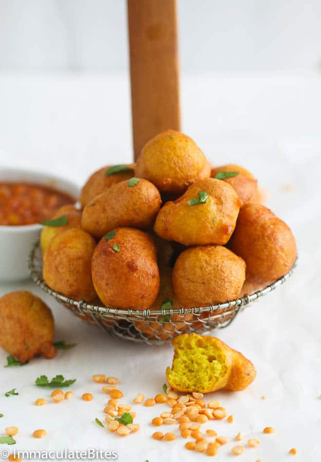

Guyanese Pholourie
Home

Description
Guyanese pholourie is a yellow split pea-based appetizer or snack.
Ingredients
- ½ cup dry split peas
- 4-5 garlic cloves
- 2 wiri wiri pepper or ½ red scotch bonnet or ½ tsp pepper sauce
- ¼ tsp turmeric
- ½ tsp curry powder
- ½ tsp geera (ground cumin)
- ½ tsp salt
- ¾ cup flour
- Oil for frying
Steps
- In a bowl soak dry split peas with about 1 ½ cups of water. Leave this overnight. By morning the peas will double in size.
- The next morning, drain the water from the peas. In a blender, put peas, garlic and pepper or pepper sauce, and enough water to cover the peas and blend on high till smooth.
- Transfer mixture to a mixing bowl. Now add all of the dry spices and mix till they are incorporated. Add baking powder, yeast, and flour. Mix thoroughly.
- Cover the batter and let it sit for 1-2 hours.
- Heat oil in frying pan, I would say enough oil that comes half way up your pan.
- Dropping the batter into the oil: This is tricky, you can do this with two spoons, but your pholourie balls will not come out as round as you would like. Grab some batter in your hand and turn your fist upside down so that the batter falls through your thumb and pointer finger. There is a picture above to help guide you. When you drop the batter into the oil, it should immediately pop up, if it doesn't then your oil is not hot enough. Turn the pholourie balls while they are frying so that they can evenly brown.
- Continue this process until all your batter is used up.
- Serve with mango or tamarind sour, lime sour, mango achar or any spicy condiment you like. I served mine with mango achar.